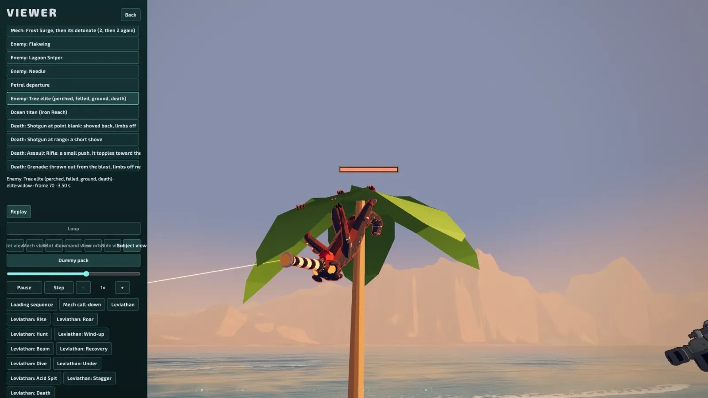
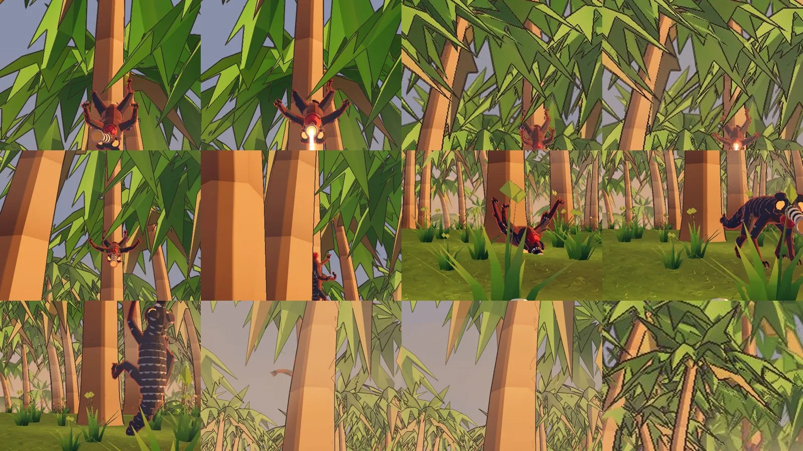
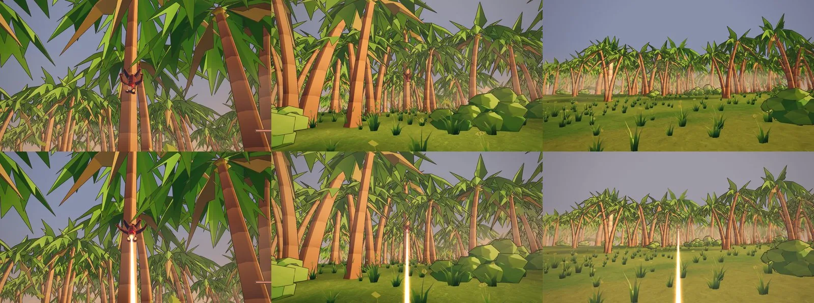
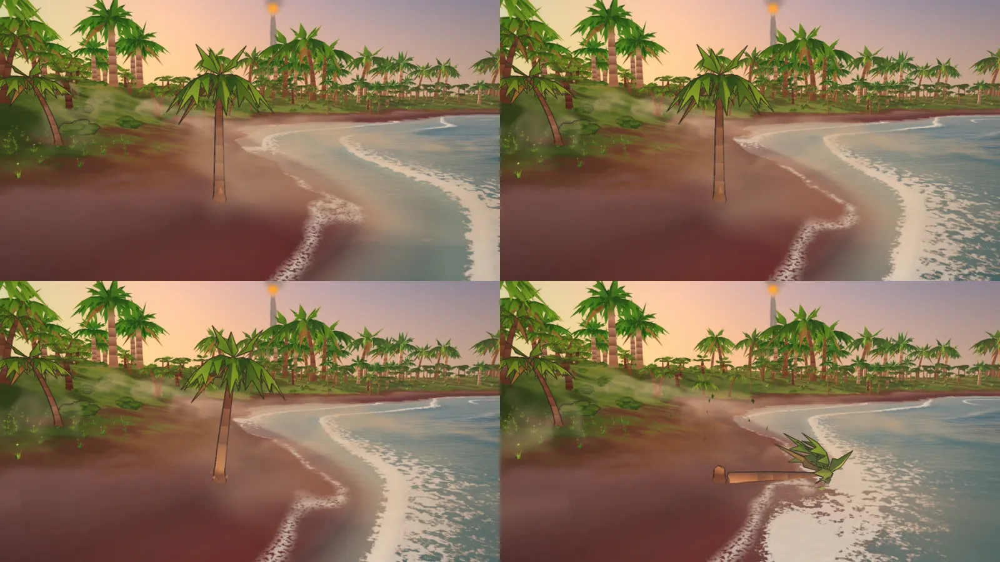
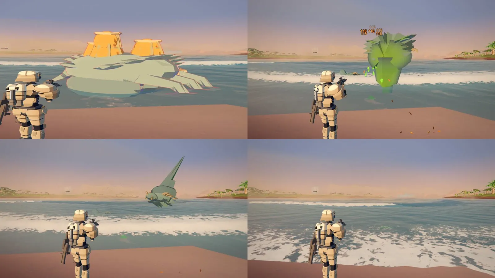
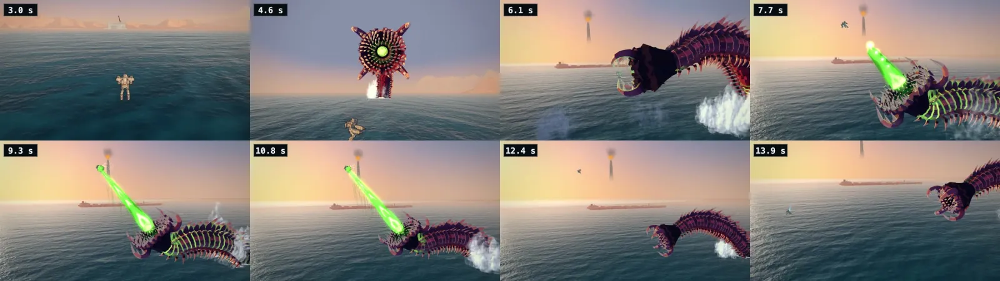
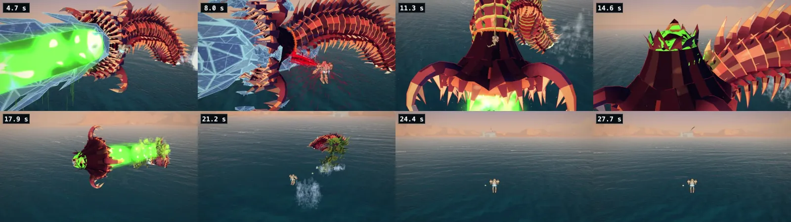
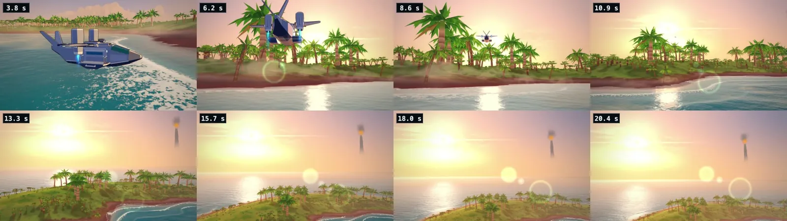
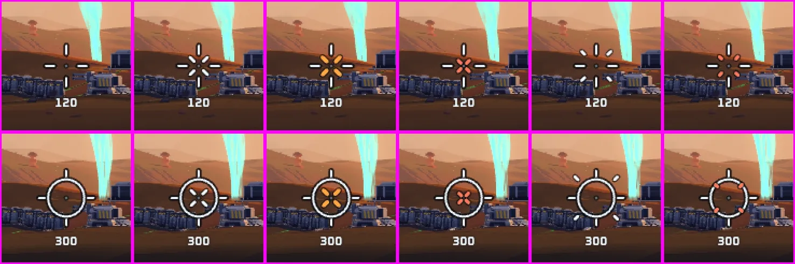
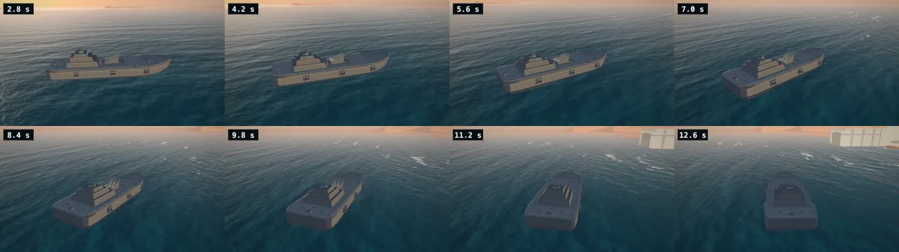

Steel Tide: to review
Version 11, 11-15 11:03 PM. New at the top: the tree elite you picked (model only, needs your eye), and a grenade felling a tree. Live with no capture yet: weapon motion, Petrel boarding with the short sunset, friendly fire, no drowning by timer, the outro with the HUD hidden. Newest first. Total 18.8 MB.
The new tree elite (working name Widow) built, not live: needs your eye
Your pick: it hangs upside down in a palm and fires a long-range shot. First frames: hanging and aiming, then on the ground after its tree is felled. Model only so far: the behaviour is being built on the laptop, so nothing here ran in a real match. No name is drawn in play.



The Coil breaks into seven pieces in review
It used to leave one big faded piece. Frames: alive, the kill, one second later, three seconds later. Look for solid pieces flying apart.

Trees felled by gunfire: rifle and grenade built, in review
Top: four rifle rounds fell a small palm (it took ten). Bottom: one grenade snaps a mid tree; palms outside the blast stay standing. Mech bullets on trees: not seen yet.


Lobber killed at close range live M91
Pieces stay solid and fly apart. In the second frame one oversize piece is drawn faded for a moment: that is the cap that stops a piece covering your view.

Maul killed at point-blank range live M91
A big chunk can no longer cover the screen. Frames at 0.15 s and 1 s after the kill.


The pilot swims live M87
A front crawl in deep water: helmet, shoulders and a stroking arm above the surface. Since M92 a swimming pilot no longer drowns by a timer.


Leviathan jaw grab with the new beam end live M86
The beam narrows to its target and ends in an impact.

Open the video on its own (2.9 MB)Leviathan finisher, ice no longer shakes live M84
The ice holds still on the frozen body near the neck.

Open the video on its own (7.2 MB)Extraction outro live M85, older capture
Captured on M85. Since then the wait on the empty sunset was cut to about 3 seconds (M88) and the HUD and health bars are hidden during the ending (M93); neither is in this clip.

Open the video on its own (3.3 MB)Island wind as a breeze live M85
Palms and grass sway about half as far as before.
 Open the video on its own (1.8 MB)
Open the video on its own (1.8 MB)Hit markers inside the reticle live M85
Amber on a weak point, red on a kill.

The ocean titan live M80
Viewer export of the titan and its two manned gatlings.

Open the video on its own (2.0 MB)